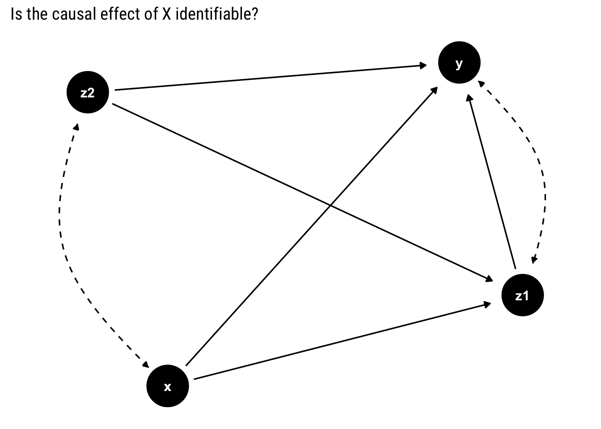
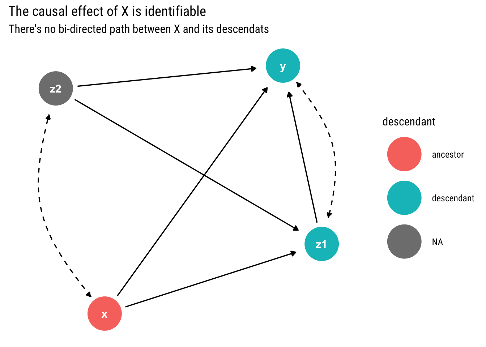
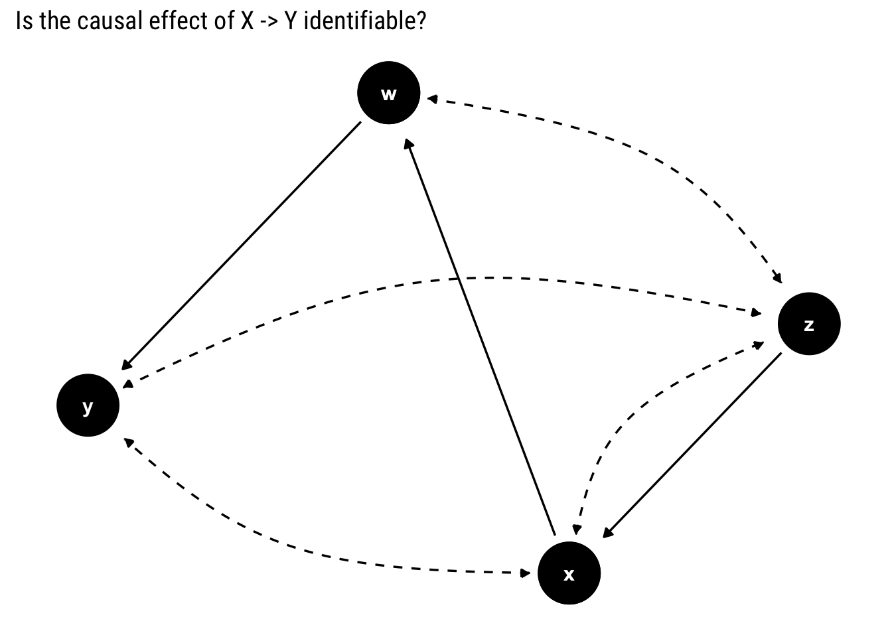
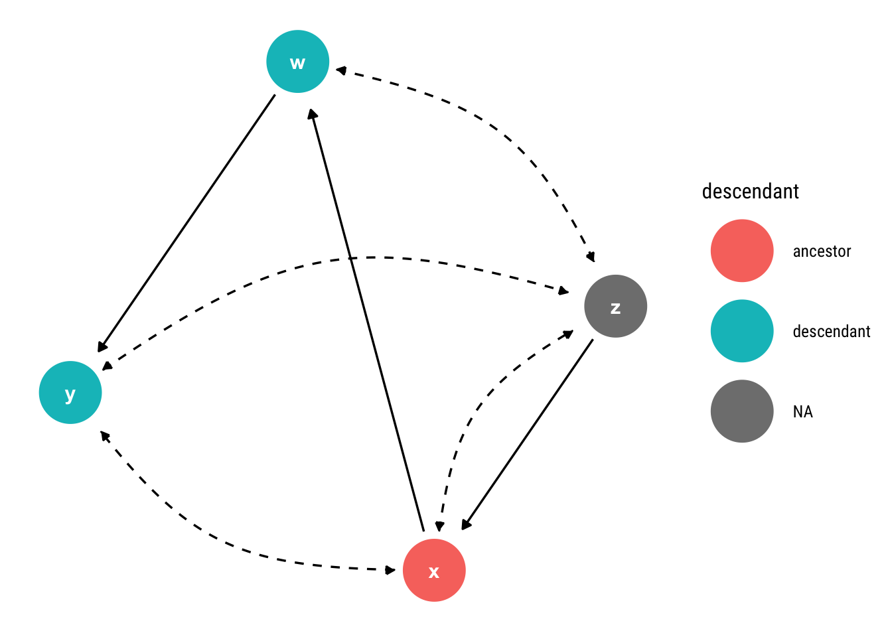
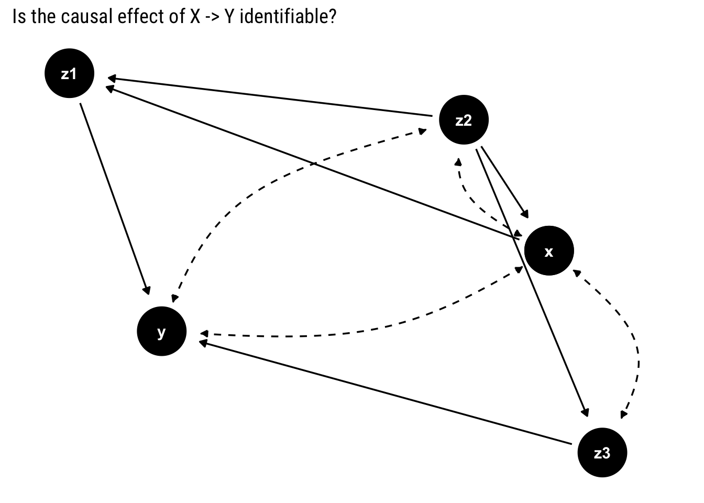
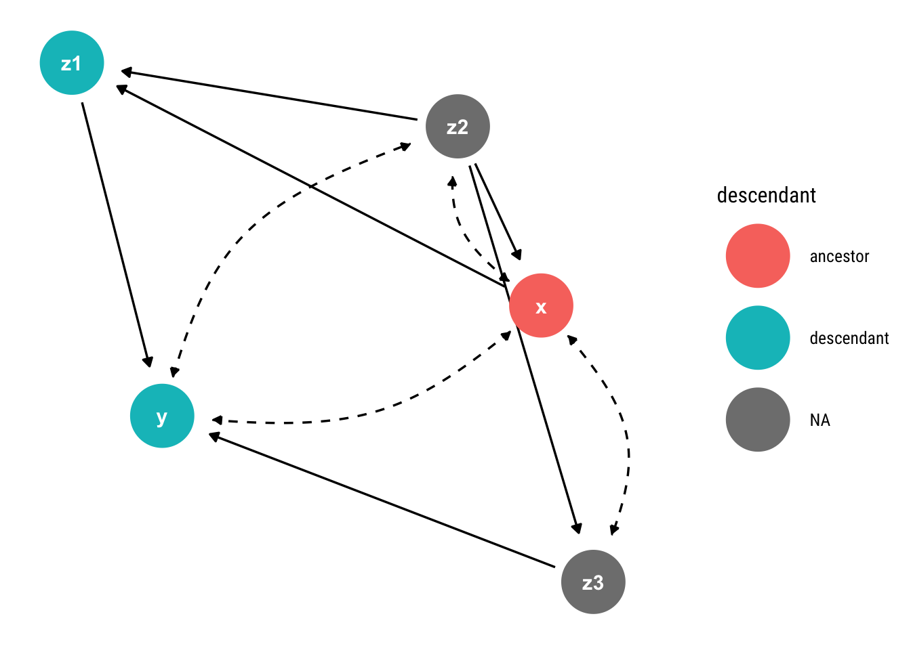
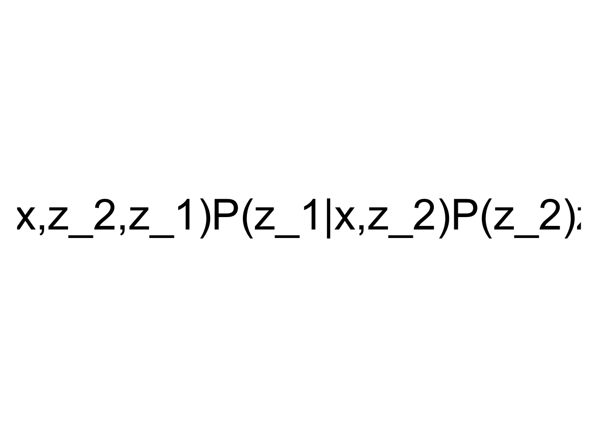

example <- dagify(x ~~ z2,
z1 ~ x,
z1 ~ z2,
z1 ~~ y,
y ~ x +z1 +z2)Motivation
We’ve defined causal effects as an interventional distribution and posit two identification strategies to estimate them: the back-door and the front-door criteria. However, we cannot always use these criteria; sometimes, we cannot measure the necessary variables to use either of them.
More generally, given a causal model and some incomplete set of measurements, when is the causal effect of interest identifiable? In this blog post, we will develop a graphical criterion to answer this question by exploiting the concept of c-components. Finally, we will put the criterion in practice with multiple examples.
All you can estimate: Markov Models
When we can obtain measurements of all the variables in the causal model, we say that our causal model is Markovian. In this case, the adjustment formula is our identification strategy: any causal effect \(X \rightarrow Y\) is identifiable if we have measurements of the parents of \(X\), \(Pa(X)\).
\[ P(Y=y|\text{do}(X=x)) = \sum_{z} P(Y=y | X=x, Pa(X)=z) P(Pa(X)=z) \] What happens when you cannot observe the parents of \(x\)?
Semi-Markovian Models
If a variable that is unobserved has two descendants in the graph, the Markovian property is violated. We may or may not be able to use the adjustment formula. For example, if one of the parents of \(X\) is unobserved, we cannot use it as our identification strategy. Even then, we may be able to use either the back-door or the front-door criteria.
Let’s start studying the problem with the following example. In this case, a bi-directed dashed edge represents a hidden common cause between the variables. We refer to all unmeasured variables by \(U\), all of the observed variables by \(V\)

To identify the causal effect of \(X\) on all of the other observed variables \(v\), we must be able to estimate the post intervention probabilities, \(P(v | do(X))\), from the pre-intervention probabilities that we can observe.
To begin to study this question, we must remember that our causal model is simultaneously a probabilistic model. In particular, they induce a decomposition of the joint probability distribution because each variable is independent of all its non-descendants given its direct parents in the graph. However, when our model contains unobserved confounders, we must marginalize them in order to obtain the joint probability distribution of the observed variables:
\[ P(v) = \sum_u \prod_i P(v_i| pa_i, u^i) P(u) \]
In this case, the decomposition of the observables is given by:
\[ \begin{aligned} P(v)=& \sum_{u_{1}} P\left(x \mid u_{1}\right) P\left(z_{2} \mid z_{1}, u_{1}\right) P\left(u_{1}\right) \\ & \quad \sum_{u_2} P\left(z_{1} \mid x, u_{2}\right) P\left(y \mid x, z_{1}, z_{2}, u_{2}\right) P\left(u_{2}\right) \end{aligned} \]
Given that \(P(v|do(X=x))\) represents an intervention, it can be represented by truncating the above expression such that we do not calculate the probability of \(X\):
\[ \begin{aligned} P(v | do(X))=& \sum_{u_{1}} P\left(z_{2} \mid z_{1}, u_{1}\right) P\left(u_{1}\right) \\ & \cdot \sum_{u_2} P\left(z_{1} \mid x, u_{2}\right) P\left(y \mid x, z_{1}, z_{2}, u_{2}\right) P\left(u_{2}\right) \end{aligned} \]
Can we express \(P(v | do(X))\) in terms of observed variables? First, we must take a brief de-tour by confounded components.
Confounded components
Notice that in both expressions the unobserved confounders partition into disjoint groups the observed variables: two variables are assigned to the same group if and only if they are connected by a bi-directed path. Each group, \(S_k\), is called a confounded component (c-component). In this case, we have two c-components that induce two factorizations (c-factors):
\[ Q_{1}=\sum_{u_{1}} P\left(x \mid u_{1}\right) P\left(z_{2} \mid z_{1}, u_{1}\right) P\left(u_{1}\right) \\ Q_{2}=\sum_{u_2} P\left(z_{1} \mid x, u_{2}\right) P\left(y \mid x, z_{1}, z_{2}, u_{2}\right) P\left(u_{2}\right) \]
Notice that each (c-factor) \(Q_k\) can be interpreted as the post-intervention distribution of the variables in \(S_k\) under an intervention on all the other variables. Observe that we can express the joint observed distribution as a product of the c-factors:
\[ P(v) = Q_1 \cdot Q_2 \] We can in turn define \(P(v | do(X))\) in terms of \(Q_1, Q_2\) if we marginalize \(P(x| u_1)\) out of \(Q_1\):
\[ P(v | do(X)) = Q_2 \sum_x Q_1 = Q_2 \cdot Q_1^x \]
Therefore, \(P(v | do(X))\) will be identifiable if: (a) we can compute the post-intervention probabilities \(Q_1, Q_2\) in terms of pre-intervention probabilities; and (b) we can marginalize \(x\) out of the estimated \(Q_1\) with pre-intervention probabilities to compute \(Q_1^x\).
In fact, Tian and Pearl (PDF) show that each c-factor is always identifiable. Therefore, the only condition to compute \(P(v | do(X))\) if and only if \(Q_1^x\) is identifiable, too. In this case:
\[ Q_1 = P(z_2 | x, z_1) P(x) \] Thus, we can marginalize \(x\) out of \(Q_1\) by summing over the values of \(X\).
\[ Q_1^x = \sum_{x'} P(z_2 | x', z_1) P(x') \]
Finally, our estimate for \(P(v | do(X))\) is the following:
\[ P(v | do(X)) = \frac{P(v)}{Q_1} \sum_{x^{\prime}} P\left(z_{2} \mid x^{\prime}, z_{1}\right) P\left(x^{\prime}\right) \] Let’s generalize from this example.
A general criteria for identification
First, notice that for any graph with bi-directed paths, we can decompose the joint probability distribution by using the partition into c-components and their respective c-factors:
\[ P(v)=\prod_{j=1}^{k} Q_{j} \]
Also notice that the truncated distribution generated by intervening on \(x\) can be represented with c-factors thus:
\[ P(v | do(X=x))=Q_{x}^{x} \prod_{i} Q_{i} \] Where \(Q_{x}^{x}\) is the c-factor where \(x\) is located once we remove \(x\) from the factorization. Therefore, \(P(v | do(X=x)\) is identifiable if \(Q_{x}^{x}\) is identifiable, too.
In fact, Tian and Pearl (PDF) show that \(Q_{x}^{x}\) is identifiable if and only if there is no bi-directed path (a path with only bi-directed edges) connecting \(X\) to any of its descendants. Therefore, we arrive at the following test to decide whether \(P(v | do(X=x)\) is identifiable:
\(P(v | do(X=x)\) is identifiable if and only if there is no bi-directed path connecting \(X\) to any of its descendants.
Notice that if \(P(v | do(X=x)\) is identifiable so it is \(P(Y | do(X=x))\). Therefore, our criterion is sufficient to determine whether \(P(v | do(X=x))\) is non-identifiable. Given that we are only interested in the causal effect on a single variable \(Y\), we can simplify the problem by only considering the subgraph of all the variables that are ancestors of \(Y\)
Intuition
What is the intuition of our identifiability test? The key to identifiability lies not in blocking back-door paths between X and Y but, rather, in blocking back-door paths between \(X\) and any of its descendants that is an ancestor of \(Y\). Thus, by blocking these paths, we can ascertain which part of the association we observe is spurious and which genuinely causative.
Let’s put this intuition into practice with the following examples.
Examples
First Example
Let’s start with our former example. Why was it identifiable? All the other variables are ancestors of \(Y\). Therefore, we cannot simplify the problem. We must look, then, if there is a bi-directed path between \(X\) and its children:
tidy_dagitty(example, layout = "nicely", seed = 2) %>%
node_descendants("x") %>%
mutate(linetype = if_else(direction == "->", "solid", "dashed")) %>%
ggplot(aes(x = x, y = y, xend = xend, yend = yend, color = descendant)) +
geom_dag_edges(aes(end_cap = ggraph::circle(10, "mm"), edge_linetype = linetype)) +
geom_dag_point() +
geom_dag_text(col = "white") +
labs(title = "The causal effect of X is identifiable",
subtitle = "There's no bi-directed path between X and its descendats")
Given that there is no bi-directed path between \(X\) and its descendants, the causal effect of \(X\) is identifiable.
Second Example
Let’s take another example:
non_identifiable_example <- dagify(x ~ z,
x ~~~ z,
x ~~ y,
w ~ x,
w ~~ z,
y ~ w,
y ~~ z)
To find out whether the effect is identifiable, we look for a bi-directed path between \(X\) and its descendants. If there is none, the effect is identifiable.
tidy_dagitty(non_identifiable_example, layout = "nicely", seed = 2) %>%
node_descendants("x") %>%
mutate(linetype = if_else(direction == "->", "solid", "dashed")) %>%
ggplot(aes(x = x, y = y, xend = xend, yend = yend, color = descendant)) +
geom_dag_edges(aes(end_cap = ggraph::circle(10, "mm"), edge_linetype = linetype)) +
geom_dag_point() +
geom_dag_text(col = "white")
Notice that there is a bi-directed path from \(X\) to \(W\) (which is one of its descendants) through \(Z\). Then, according to our criterion, the effect is non-identifiable.
Third example
Finally, let’s end with the following example:
third_example <- dagify(z1 ~ x + z2,
x ~ z2,
x ~~ z2,
x ~~ y,
z2 ~~ y,
z3 ~ z2,
x ~~ z3,
y ~ z1 + z3)
As in the previous examples, we look for a bi-directed path between \(X\) and its descendants.
tidy_dagitty(third_example, layout = "nicely", seed = 2) %>%
node_descendants("x") %>%
mutate(linetype = if_else(direction == "->", "solid", "dashed")) %>%
ggplot(aes(x = x, y = y, xend = xend, yend = yend, color = descendant)) +
geom_dag_edges(aes(end_cap = ggraph::circle(10, "mm"), edge_linetype = linetype)) +
geom_dag_point() +
geom_dag_text(col = "white")
Notice that \(X\) has no bi-directed path with its only descendant that is not \(Y\). Therefore, the causal effect is identifiable.
What about a necessary condition for identifiability?
Our stated test is sufficient but not necessary for identifiability. Is there a necessary and sufficient condition? Yes, there is such an algorithm by Pearl and Shipster (PDF). It extends the ideas we’ve seen in this post and returns an estimator of the causal effect in question in terms of pre-intervention probabilities. It is complete and equivalent to Pearl’s do-calculus.
In R, the causaleffect package has an implementation of this algorithm. It can be used thus for our first example:
first_example_igraph <- graph.formula(x -+ z_2,
z_2 -+ x,
x -+ z_1,
z_2 -+ z_1,
z_1 -+ y,
y -+ z_1,
x -+ y,
z_1 -+ y,
z_2 -+ y, simplify = FALSE) %>%
set.edge.attribute("description", index = c(1, 2, 5, 6), "U")
ce <- causal.effect(y = "y", x = "x", z = NULL, G = first_example_igraph, expr = TRUE)
plot(TeX(ce), cex = 3)
Conclusion
In Semi-Markovian models, we have hidden common causes between our variables that can derail all of our identification strategies. We’ve seen that a sufficient test for identifiability is given by the nature of the hidden common causes that we represent with bi-directed edges. If there’s a bi-directed path between \(X\) and its descendants that are also ancestors of \(Y\), the causal effect is non-identifiable.
We’ve also presented a sufficient and necessary condition and showed how to use it in R. The condition is complete and, when the effect is identifiable, returns an estimator that we can use to estimate the causal effect using observational data.